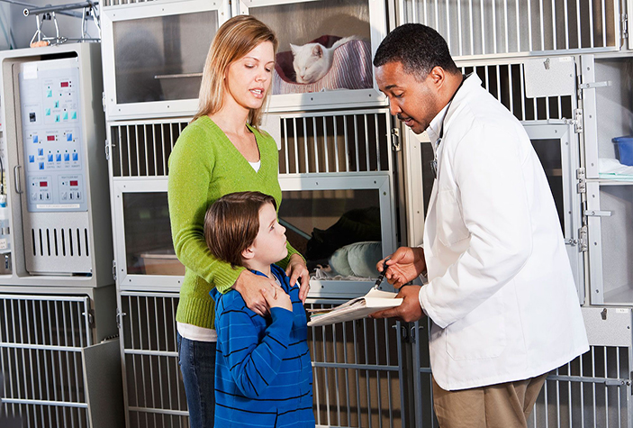

Que requisitos se necesita para adoptar una mascota
Milagros Caninos !!!

Hola!!
Muchas personas quieren adoptar una mascota pero no saben cómo. Aquí te explicamos qué necesitas y los pasos que debes seguir.
Son muchos los animales que necesitan tu ayuda. Mascotas abandonadas, heridas o maltratadas están a la espera de una casa que los acoja, losquiera y proteja. Si te comprometes a ser un buen dueño y estás decidido a adoptar puedes consultar la web de protectoras de animales y acudir a los centros de albergues. Descubre cómo funciona la política de adopción de estas asociaciones.
Requisitos para adoptar a una mascota:
- Ser mayor de edad. Se presentará el DNI de identificación.
- Comprobante de domicilio. Documento que demuestre que la persona es propietaria del domicilio donde vivirá la mascota o, en caso de alquiler, que el arrendatario permita que la residencia de los animales.
- Contrato de adopción. Debes firmar un acta que te compromete a:
- Cuidar de tu mascota y mantenerla en unas condiciones óptimas de espacio, tiempo, alimentación, ejercicio...
- Dotarle de los cuidados veterinarios que necesite. La mascota se entregará desparasitada y con las correspondientes vacunas, los perros llevarán además microchip.
- No destinarlo a la cría o reproducción.
- Notificar cualquier cambio a la asociación (pérdida, muerte...).
- Si no puedes hacerte cargo de él nunca lo abandones, devuelvelo a la asociación.

Cubrir los costos
Las asociaciones no reciben subsidio económico, viven de las ayudas económicas personales. Se trata de una donación para cubrir los gastos veterinarios de las mascotas mientras han estado bajo su tutela.
Lo que debes saber para adoptar una mascota
- La asociación tiene el derecho de no entregarte la mascota si no se cumplen los requisitos exigidos.
- Puede solicitar que la presentación o adopción del animal se realice en el domicilio en el que vivirá la mascota para conocer su futuro entorno.
- Durante el régimen de acogida se realizará un seguimiento para ver qué tal se adapta la mascota a la familia y comprobar que se cumple el compromiso adquirido.
- Si te encuentras un animal abandonado existe un plazo de tiempo que hay que esperar antes de poder adoptarlo oficialmente por si el dueño lo ha perdido y lo quiere reclamar.

Otras opciones
- Donación. Las aportaciones económicas o la donación de objetos y juguetes para estos animales son otra forma de mejorar su vida en los centros de acogida.
- Apadrinamiento. Puedes convertirte en la madrina/padrino de una mascota y ocuparte de su manutención hasta que un dueño le adopte.
- Voluntariado. Otra opción es hacerte voluntario de una asociación protectora de animales y participar en su proyecto solidario: asistir directamente a los animales, divulgación de información y desarrollo de eventos en defensa de los animales, seguimiento de adopciones, etc.
- Casas de acogida. Puedes acoger temporalmente a una mascota abandonada hasta que le adopten y encuentre un nuevo hogar.
**Milagros Caninos **
R/a Medellin 2da seccion Villahermosa, Tabasco Sector El Pilar.
Telefono:99-33-72-39-47
Email: JoseAntoni9801@gmail.com